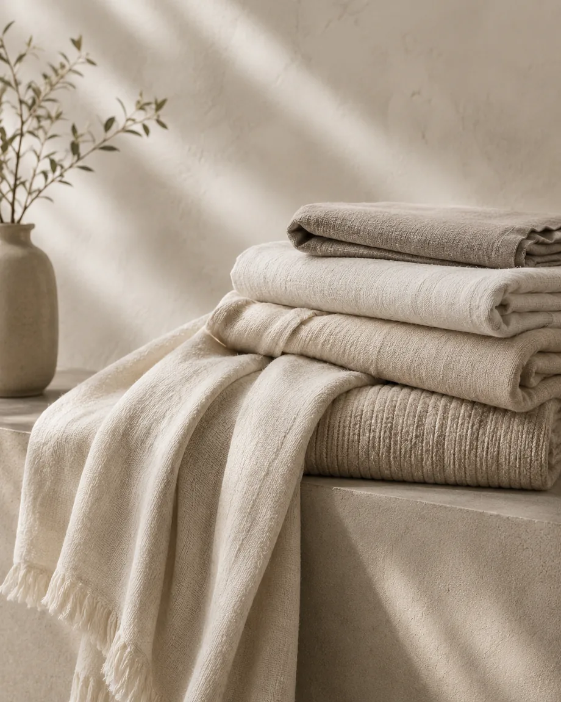
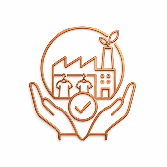
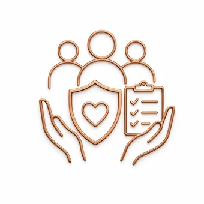
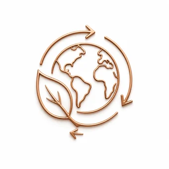
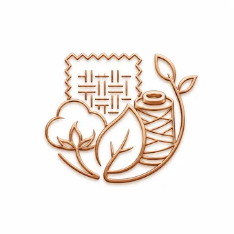

Woven Apparel
Shirts, tops, dresses, trousers, and structured woven garments for global buyers.
Trusted apparel sourcing partner
End-to-end solutions in product development, material sourcing, manufacturing coordination, quality assurance, and logistics for international apparel buyers.
Buyer-ready sourcing network
What we do
Velora Sourcing International is built for fashion brands that need dependable communication, production visibility, selected supplier coordination, and export-ready execution.
Shirts, tops, dresses, trousers, and structured woven garments for global buyers.

Premium knit polos, fleece, jersey, pullovers, and everyday comfortwear.

Jeans, jackets, shirts, and denim-based collections with reliable wash and finish support.

Jackets, coats, puffers, and layered apparel for seasonal fashion programs.

Performance wear, sportswear, gym apparel, and movement-focused product lines.

Comfortable, safe, and quality-focused apparel for children and babywear programs.

Soft textile products including towels, linens, blankets, and fabric-based home goods.
Fashion accessories, trims, labels, belts, scarves, and related apparel add-ons.
Our services
From product development to final delivery, we manage every stage with precision, transparency, and care.
Explore ServicesFrom initial concept to buyer-ready sample, we support design interpretation, tech-pack coordination, fabric selection, fit development, and collection planning.
View service →We help source fabrics, trims, accessories, labels, packaging, and production materials through trusted supplier networks.
View service →We coordinate with selected production partners to manage garment manufacturing, timeline follow-up, and factory communication.
View service →We support inline, midline, and final inspection processes to help maintain buyer expectations, product consistency, and shipment readiness.
View service →We assist with packing coordination, shipment preparation, documentation support, and delivery follow-up.
View service →Our merchandising team helps manage buyer communication, sample tracking, order updates, and production coordination.
View service →Global presence
With sourcing roots in Bangladesh and business presence in China, Velora supports international buyers with clear communication and production coordination.
Our Locations



A practical guide for buyers reviewing capability, communication, compliance, sampling, production visibility, and shipment support.
How scale, skill, category depth, and competitive production make Bangladesh important for global fashion supply chains.
The details that help suppliers quote accurately, sample faster, and reduce production misunderstandings.